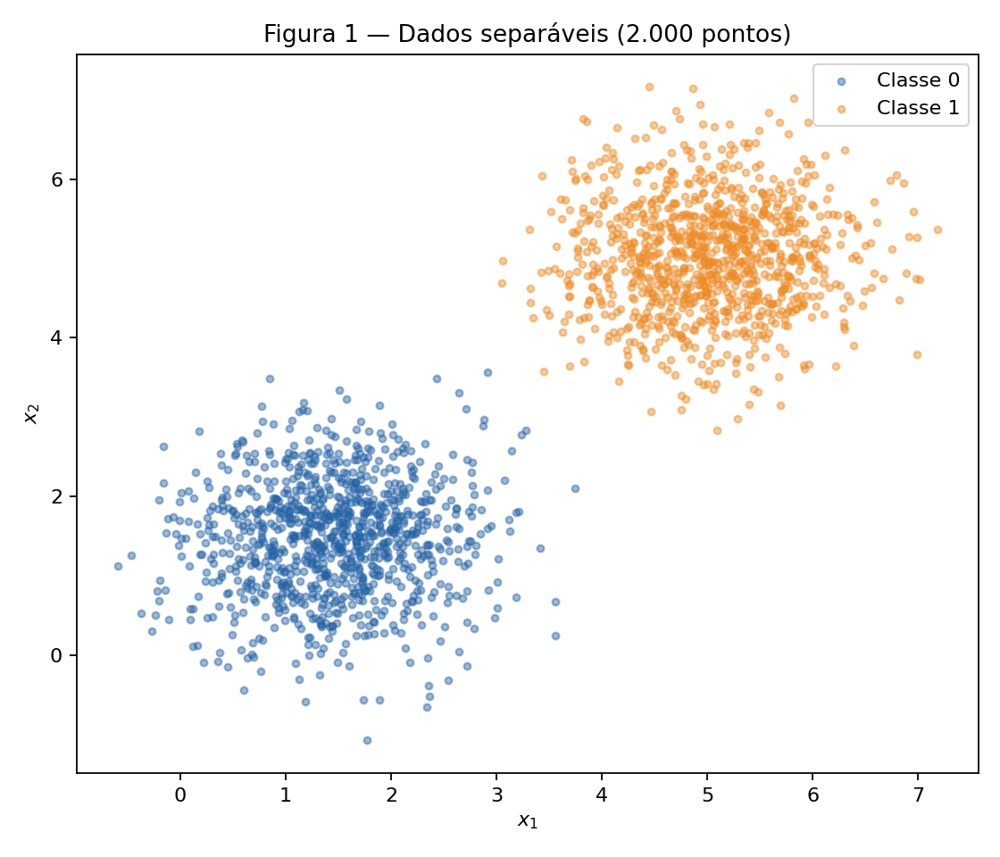
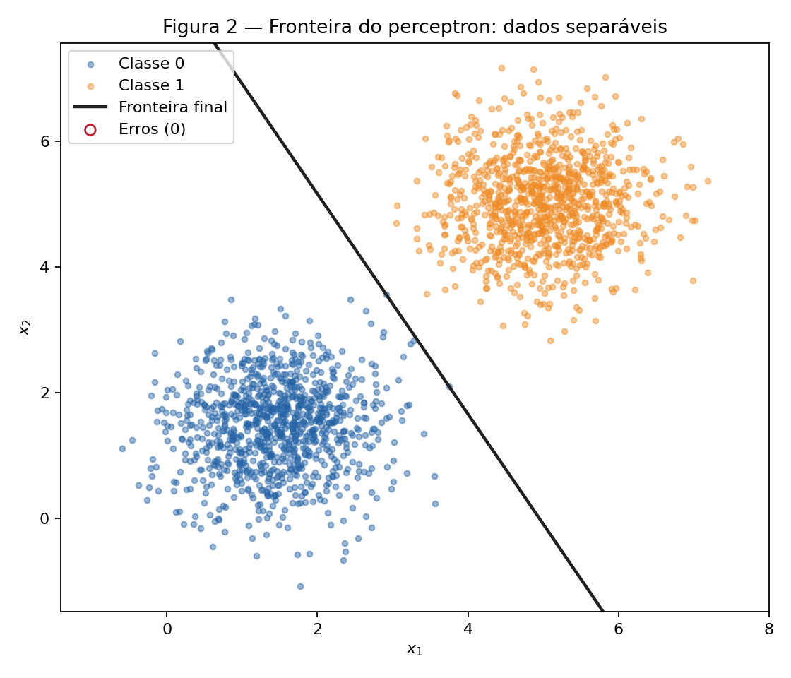
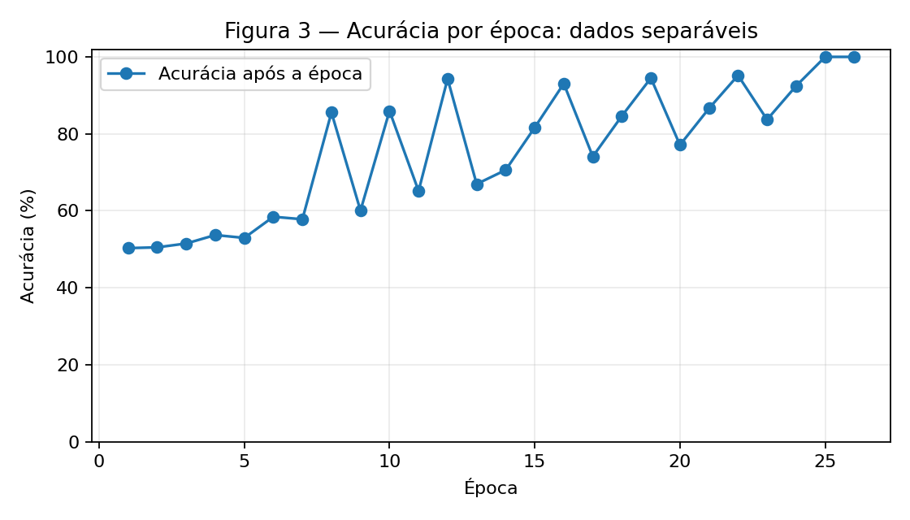
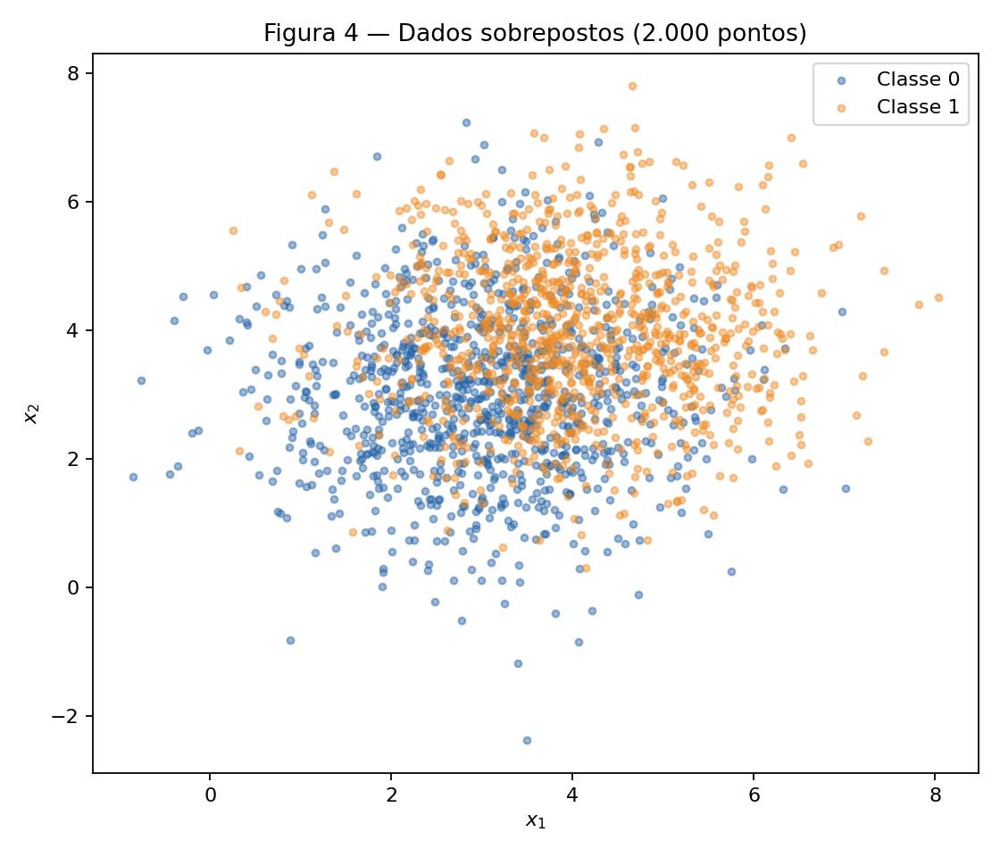
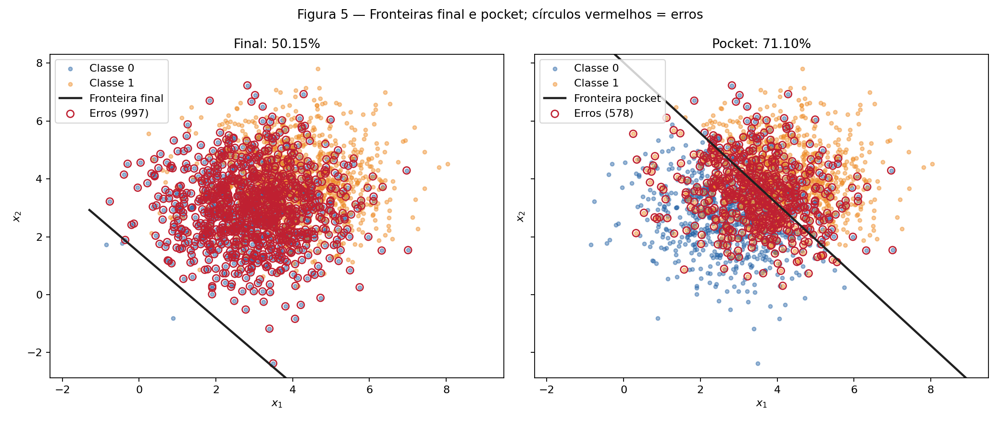
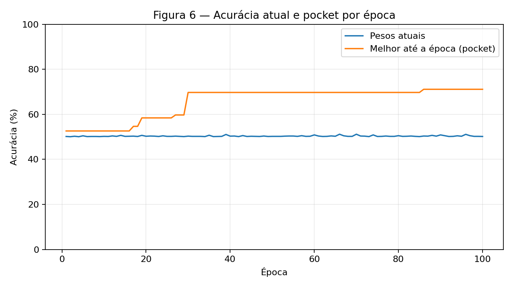

Atividade 2 — Perceptron e seus limites
Autoria e uso de IA. Este relatório foi desenvolvido com colaboração do Codex (OpenAI). Para auxiliar no desenvolvimento dos códigos.
Solução de 2. Perceptron. O mesmo algoritmo é treinado em dados separáveis e sobrepostos para observar a diferença entre convergência e oscilação. Foi usado rng = np.random.default_rng(42) durante todo o experimento. São 1.000 observações por classe, em ordem classe 0 seguida de classe 1, sem embaralhamento. No teste das duas taxas de aprendizado, o mesmo vetor inicial foi reutilizado para isolar o efeito de \(\eta\).
Abordagem e desafio. O perceptron usa ativação linear, degrau em zero e atualizações amostra a amostra com erro \(y-\hat y\). Com dados sobrepostos, o desafio foi medir a acurácia após cada atualização para copiar o melhor estado (pocket), sem confundi-lo com os pesos ao fim da última época. A ordem dos dados afeta esses últimos pesos; por isso, ela e a semente são fixas. As acurácias deste relatório são medidas no próprio conjunto gerado, como pede o enunciado, e não estimativas em dados externos.
Código reproduzível
Os notebooks executáveis são Exercise 1 e Exercise 2. A implementação compartilhada está em perceptron.py, e run_analysis.py regenera as seis figuras e results.json:
Implementação completa (perceptron.py)
"""Perceptron binário (rótulos 0/1) e gerador de dados do relatório."""
from dataclasses import dataclass
import numpy as np
@dataclass
class FitResult:
weights: np.ndarray
bias: float
accuracies: list[float]
updates: list[int]
pocket_weights: np.ndarray | None
pocket_bias: float | None
pocket_accuracy: float | None
pocket_epoch: int | None
pocket_curve: list[float]
@property
def epochs(self):
return len(self.accuracies)
def make_dataset(rng, mean_0, mean_1, variance, count=1000):
"""Sorteia as duas classes, nesta ordem, usando o mesmo Generator."""
covariance = np.eye(2) * variance
x0 = rng.multivariate_normal(mean_0, covariance, size=count)
x1 = rng.multivariate_normal(mean_1, covariance, size=count)
x = np.vstack((x0, x1))
y = np.r_[np.zeros(count, dtype=int), np.ones(count, dtype=int)]
return x, y
def activation(x, weights, bias):
return x @ weights + bias
def predict(x, weights, bias):
"""Degrau: 1 se a ativação é não negativa; 0 em caso contrário."""
return (activation(x, weights, bias) >= 0).astype(int)
def accuracy(x, y, weights, bias):
return float(np.mean(predict(x, weights, bias) == y))
def train(x, y, rng, eta=0.01, max_epochs=100, pocket=False, initial_weights=None):
"""Treina uma amostra por vez; o pocket só guarda cópias após melhorias."""
weights = (rng.normal(0, 0.01, size=2) if initial_weights is None
else np.array(initial_weights, dtype=float, copy=True))
bias = 0.0
accuracies, updates, pocket_curve = [], [], []
best_accuracy = -1.0
best_weights = best_bias = best_epoch = None
for epoch in range(1, max_epochs + 1):
mistakes = 0
for sample, target in zip(x, y):
prediction = int(activation(sample, weights, bias) >= 0)
error = int(target) - prediction
if error == 0:
continue
# Para y em {0,1}, o erro é +1 ou -1 em uma classificação errada.
weights += eta * error * sample
bias += eta * error
mistakes += 1
if pocket:
current_accuracy = accuracy(x, y, weights, bias)
if current_accuracy > best_accuracy:
best_accuracy = current_accuracy
best_weights = weights.copy()
best_bias = bias
best_epoch = epoch
updates.append(mistakes)
accuracies.append(accuracy(x, y, weights, bias))
if pocket:
pocket_curve.append(best_accuracy)
if mistakes == 0:
break
return FitResult(weights.copy(), bias, accuracies, updates,
best_weights, best_bias,
best_accuracy if pocket else None,
best_epoch, pocket_curve)
Geração das figuras (run_analysis.py)
"""Executa o relatório do perceptron e grava as Figuras 1 a 6."""
from pathlib import Path
import json
import numpy as np
import matplotlib.pyplot as plt
from perceptron import make_dataset, predict, accuracy, train
HERE = Path(__file__).resolve().parent
FIGURES = HERE.parent / 'figures'
FIGURES.mkdir(exist_ok=True)
COLORS = ('#2563a6', '#ee8b25')
def scatter_classes(ax, x, y):
for cls in (0, 1):
points = x[y == cls]
ax.scatter(points[:, 0], points[:, 1], s=12, alpha=.45,
color=COLORS[cls], label=f'Classe {cls}', rasterized=True)
ax.set_xlabel('$x_1$')
ax.set_ylabel('$x_2$')
ax.legend(loc='best')
def boundary(ax, weights, bias, xlim, label, style='-', color='#202020'):
"""Plota w1*x1 + w2*x2 + b = 0, inclusive quando w2 é quase zero."""
if abs(weights[1]) > 1e-12:
xx = np.array(xlim)
yy = -(weights[0] * xx + bias) / weights[1]
ax.plot(xx, yy, style, color=color, linewidth=2, label=label)
elif abs(weights[0]) > 1e-12:
ax.axvline(-bias / weights[0], linestyle=style, color=color,
linewidth=2, label=label)
def mark_errors(ax, x, y, weights, bias):
wrong = predict(x, weights, bias) != y
ax.scatter(x[wrong, 0], x[wrong, 1], s=44, facecolors='none',
edgecolors='#bf2031', linewidths=1.2,
label=f'Erros ({wrong.sum()})', rasterized=True)
return int(wrong.sum())
def save(fig, number):
fig.tight_layout()
fig.savefig(FIGURES / f'figure{number}.png', dpi=160)
plt.close(fig)
def main():
rng = np.random.default_rng(42)
x1, y1 = make_dataset(rng, [1.5, 1.5], [5, 5], .5)
# Reuso do MESMO vetor inicial isola a influência da taxa de aprendizado.
w0 = rng.normal(0, 0.01, size=2)
fit1 = train(x1, y1, rng, eta=.01, initial_weights=w0)
fit1_fast = train(x1, y1, rng, eta=1.0, initial_weights=w0)
x2, y2 = make_dataset(rng, [3, 3], [4, 4], 1.5)
fit2 = train(x2, y2, rng, eta=.01, pocket=True)
fig, ax = plt.subplots(figsize=(7, 6))
scatter_classes(ax, x1, y1)
ax.set_title('Figura 1 — Dados separáveis (2.000 pontos)')
save(fig, 1)
fig, ax = plt.subplots(figsize=(7, 6))
scatter_classes(ax, x1, y1)
boundary(ax, fit1.weights, fit1.bias, ax.get_xlim(), 'Fronteira final')
mark_errors(ax, x1, y1, fit1.weights, fit1.bias)
ax.set_ylim(x1[:, 1].min()-.4, x1[:, 1].max()+.4)
ax.set_title('Figura 2 — Fronteira do perceptron: dados separáveis')
ax.legend(loc='best')
save(fig, 2)
fig, ax = plt.subplots(figsize=(7, 4))
ax.plot(np.arange(1, fit1.epochs+1), np.array(fit1.accuracies)*100,
marker='o', label='Acurácia após a época')
ax.set(xlabel='Época', ylabel='Acurácia (%)',
title='Figura 3 — Acurácia por época: dados separáveis')
ax.set_ylim(0, 102)
ax.grid(alpha=.25)
ax.legend()
save(fig, 3)
fig, ax = plt.subplots(figsize=(7, 6))
scatter_classes(ax, x2, y2)
ax.set_title('Figura 4 — Dados sobrepostos (2.000 pontos)')
save(fig, 4)
fig, axes = plt.subplots(1, 2, figsize=(13, 5.5), sharex=True, sharey=True)
for ax, weights, bias, name in (
(axes[0], fit2.weights, fit2.bias, 'final'),
(axes[1], fit2.pocket_weights, fit2.pocket_bias, 'pocket')):
scatter_classes(ax, x2, y2)
boundary(ax, weights, bias, ax.get_xlim(), f'Fronteira {name}')
mark_errors(ax, x2, y2, weights, bias)
ax.set_ylim(x2[:, 1].min()-.5, x2[:, 1].max()+.5)
ax.set_title(f'{name.capitalize()}: {accuracy(x2,y2,weights,bias):.2%}')
ax.legend(loc='best')
fig.suptitle('Figura 5 — Fronteiras final e pocket; círculos vermelhos = erros')
save(fig, 5)
fig, ax = plt.subplots(figsize=(8, 4.5))
epochs = np.arange(1, fit2.epochs+1)
ax.plot(epochs, np.array(fit2.accuracies)*100, label='Pesos atuais')
ax.plot(epochs, np.array(fit2.pocket_curve)*100, label='Melhor até a época (pocket)')
ax.set(xlabel='Época', ylabel='Acurácia (%)',
title='Figura 6 — Acurácia atual e pocket por época')
ax.set_ylim(0, 100)
ax.grid(alpha=.25)
ax.legend()
save(fig, 6)
results = {
'initial_weights': w0.tolist(),
'exercise1': {'weights': fit1.weights.tolist(), 'bias': fit1.bias,
'epochs': fit1.epochs, 'accuracy': fit1.accuracies[-1],
'updates': fit1.updates, 'curve': fit1.accuracies,
'direction': (fit1.weights / np.linalg.norm(fit1.weights)).tolist()},
'exercise1_eta1': {'weights': fit1_fast.weights.tolist(), 'bias': fit1_fast.bias,
'epochs': fit1_fast.epochs, 'accuracy': fit1_fast.accuracies[-1],
'updates': fit1_fast.updates,
'direction': (fit1_fast.weights / np.linalg.norm(fit1_fast.weights)).tolist()},
'exercise2': {'weights': fit2.weights.tolist(), 'bias': fit2.bias,
'epochs': fit2.epochs, 'accuracy': fit2.accuracies[-1],
'updates': fit2.updates,
'pocket_weights': fit2.pocket_weights.tolist(),
'pocket_bias': fit2.pocket_bias,
'pocket_accuracy': fit2.pocket_accuracy,
'pocket_epoch': fit2.pocket_epoch,
'curve': fit2.accuracies,
'pocket_curve': fit2.pocket_curve},
}
(HERE / 'results.json').write_text(json.dumps(results, indent=2) + '\n')
print(json.dumps({key: {k: v for k, v in value.items() if k not in ('curve','pocket_curve','updates')}
for key, value in results.items() if key != 'initial_weights'}, indent=2))
return results
if __name__ == '__main__':
main()
Exercise 1 — Dados separáveis
A — Generate the data
A classe 0 foi sorteada de \(\mathcal N([1{,}5,1{,}5],0{,}5I)\) e a classe 1 de \(\mathcal N([5,5],0{,}5I)\). O conjunto tem 2.000 pontos, sendo 1.000 por classe. As nuvens ficam suficientemente afastadas para uma reta separar esta amostra.

B — Implement the perceptron
A predição é \(\hat y=\mathbf 1[\mathbf w\cdot\mathbf x+b\geq0]\). Em cada amostra, calculo \(e=y-\hat y\) e aplico \(\mathbf w\leftarrow\mathbf w+\eta e\mathbf x\) e \(b\leftarrow b+\eta e\). Assim, um acerto produz \(e=0\); um falso negativo produz \(+1\); um falso positivo produz \(-1\). A forma \(\eta y\mathbf x\), apropriada a outra convenção de rótulos, nunca corrigiria falsos positivos da classe 0 aqui.
Os pesos começam em rng.normal(0, 0.01, size=2) e \(b=0\). Uso \(\eta=0{,}01\) e paro após uma época sem atualizações ou 100 épocas. A acurácia total é registrada após toda época. O vetor inicial sorteado foi \([0{,}002532,\ 0{,}008952]\).
C — Train and measure
O treinamento terminou em 26 épocas, com \(\mathbf w=[0{,}050497,\ 0{,}028872]\), \(b=-0{,}250000\) e 100,00% de acurácia (2.000/2.000). A Figura 2 mostra \(\mathbf w\cdot\mathbf x+b=0\); os círculos vermelhos marcariam pontos classificados incorretamente, mas não há nenhum.

Na Figura 3, a acurácia é medida depois de cada passagem completa. Ela pode oscilar antes da convergência, pois uma atualização que corrige uma amostra pode alterar a classificação de outra.

D — Analysis
-
Cada erro desloca os pesos e o viés na direção que corrige aquela amostra. Como existe uma reta separadora para esta amostra, os erros deixam de ocorrer após um número finito de atualizações. Nesta execução, a primeira época teve 3 atualizações, a penúltima 1 e a 26ª 0. O número não precisa cair em todas as épocas, mas chega a zero.
-
Com \(\eta=1{,}0\) e o mesmo vetor inicial, o modelo chegou a 100,00% em 37 épocas, com \(\mathbf w=[5{,}870616,\ 3{,}359239]\), \(b=-31{,}000000\). A direção unitária de \(\mathbf w\) foi \([0{,}868123,\ 0{,}496349]\) para \(\eta=0{,}01\) e \([0{,}867950,\ 0{,}496652]\) para \(\eta=1{,}0\). São direções próximas, mas não idênticas; as retas também diferem porque a razão entre \(b\) e \(\lVert\mathbf w\rVert\) muda. Como os pesos iniciais têm ordem de grandeza \(0{,}01\), uma atualização \(\eta\mathbf x\) com \(\eta=1\) domina muito mais o início do que com \(\eta=0{,}01\). Portanto, \(\eta\) altera a trajetória e pode selecionar uma fronteira separadora diferente; não há garantia de que a taxa maior exija menos épocas.
-
Se \(\mathbf w_0=\mathbf0\) e \(b_0=0\), escreva \(\theta=(\mathbf w,b)\) e \(\tilde{\mathbf x}=(\mathbf x,1)\). Para a taxa \(\eta_j>0\), cada passo é \(\theta^{(j)}_{t+1}=\theta^{(j)}_t+\eta_j e_t\tilde{\mathbf x}_t\). Por indução, \(\theta^{(2)}_t=(\eta_2/\eta_1)\theta^{(1)}_t\): a igualdade vale no início e, como o fator é positivo, os sinais das ativações e todos os \(e_t\) continuam iguais; logo, vale no passo seguinte. A fronteira \(\mathbf w\cdot\mathbf x+b=0\), a sequência de erros e a época de parada são idênticas. Isso explica por que a inicialização não nula é necessária para observar o efeito de \(\eta\) nesta comparação.
Exercise 2 — Dados sobrepostos
A — Generate the data
A classe 0 foi sorteada de \(\mathcal N([3,3],1{,}5I)\) e a classe 1 de \(\mathcal N([4,4],1{,}5I)\), novamente com 1.000 observações por classe. O mesmo gerador aleatório prossegue do Exercício 1. As nuvens se misturam em grande parte do plano.

B — Train, keeping the best weights
Reutilizei a função train do Exercício 1 com \(\eta=0{,}01\) e limite de 100 épocas. Após cada atualização, comparo a acurácia nos 2.000 pontos com a melhor anterior. Se for estritamente maior, copio pesos e viés para o pocket. A função mantém os pesos atuais separados dessa cópia.
- Estado final, época 100: \(\mathbf w=[0{,}054484,\ 0{,}048043]\), \(b=-0{,}070000\), acurácia 50,15% (1.003/2.000).
- Pocket, melhorado por último na época 86: \(\mathbf w=[0{,}010664,\ 0{,}008727]\), \(b=-0{,}070000\), acurácia 71,10% (1.422/2.000).
C — Figures
A Figura 5 usa os mesmos pontos nos dois painéis. A reta final fica abaixo da região central das nuvens e quase todos os pontos são previstos como classe 1. A reta do pocket atravessa a área de sobreposição e reduz os erros. Os círculos vermelhos identificam os erros de cada conjunto de pesos.

A Figura 6 compara a acurácia dos pesos correntes depois de cada época com a melhor acurácia encontrada após qualquer atualização até então. A curva do pocket não diminui, mesmo quando a corrente oscila.

D — Analysis
-
O estado final atinge 50,15%, e o pocket 71,10%, perto do patamar de aproximadamente 73% indicado no enunciado. Os pesos finais definem aproximadamente \(x_2=1{,}46-1{,}13x_1\); perto do centro combinado \((3{,}5,3{,}5)\), a ativação é positiva, classificando a maior parte das duas classes como 1. Já a fronteira do pocket passa perto do centro. Em cada erro, \(|\Delta b|=\eta=0{,}01\), enquanto \(\lVert\Delta\mathbf w\rVert=\eta\lVert\mathbf x\rVert\), tipicamente perto de 0,05 para \(\lVert\mathbf x\rVert\approx5\). Assim, a última sequência de correções pode deslocar a orientação/posição da reta de modo desfavorável; o treinamento comum não conserva o melhor estado. O pocket o conserva.
-
A Figura 3 termina em 100% e deixa de mudar; a Figura 6 segue oscilando até a 100ª época. O teorema de convergência do perceptron garante um número finito de erros se existir uma separação linear com margem positiva para as amostras. As classes sobrepostas geradas aqui não atendem a essa hipótese; permanecem erros para qualquer reta encontrada pelo algoritmo.
-
Mais épocas oferecem outras oportunidades de encontrar um estado bom para o pocket, mas não fazem o perceptron padrão convergir em dados inseparáveis nem garantem que o último estado seja bom. Reduzir \(\eta\) multiplica tanto \(\Delta b\) quanto \(\Delta\mathbf w\); a razão \(\lVert\Delta\mathbf w\rVert/|\Delta b|=\lVert\mathbf x\rVert\) permanece aproximadamente 5. Além disso, o conflito entre pontos sobrepostos continua. Uma taxa menor pode mudar a trajetória quando o início é não nulo, mas não elimina a causa da oscilação.
Results summary
| # | Quantity | Value |
|---|---|---|
| 1 | Exercise 1 — final \(\mathbf w\) and \(b\) | \([0{,}050497,\ 0{,}028872]\); \(b=-0{,}250000\) |
| 2 | Exercise 1 — epochs to convergence | 26 |
| 3 | Exercise 1 — final accuracy | 100,00% (2.000/2.000) |
| 4 | Exercise 1 — epochs and final accuracy with \(\eta=1{,}0\) | 37; 100,00% (2.000/2.000) |
| 5 | Exercise 2 — final \(\mathbf w\) and \(b\) | \([0{,}054484,\ 0{,}048043]\); \(b=-0{,}070000\) |
| 6 | Exercise 2 — accuracy of the final weights | 50,15% (1.003/2.000) |
| 7 | Exercise 2 — accuracy of the pocket weights | 71,10% (1.422/2.000) |
| 8 | Exercise 2 — epoch at which the pocket best occurred | 86 |